آية الكرسي
Āyat al-Kursī2:255–257
Interrogé sur le plus grand verset du Livre d'Allah, Ubayy répondit par Āyat al-Kursī, et le Prophète ﷺ l'approuva : « Que la science te réjouisse, Abū l-Mundhir ! »
Apprendre le Coran par cœur, sur Android
Les sourates et les versets aux vertus établies, appris à l'oreille. Écouter, répéter, réciter de mémoire, āya par āya.
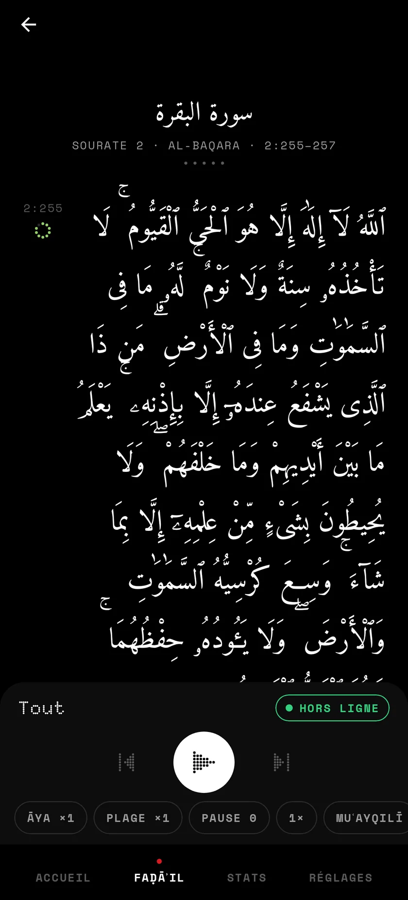
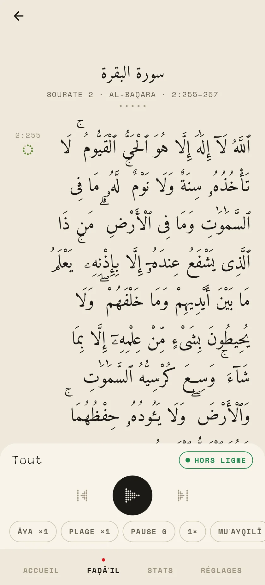
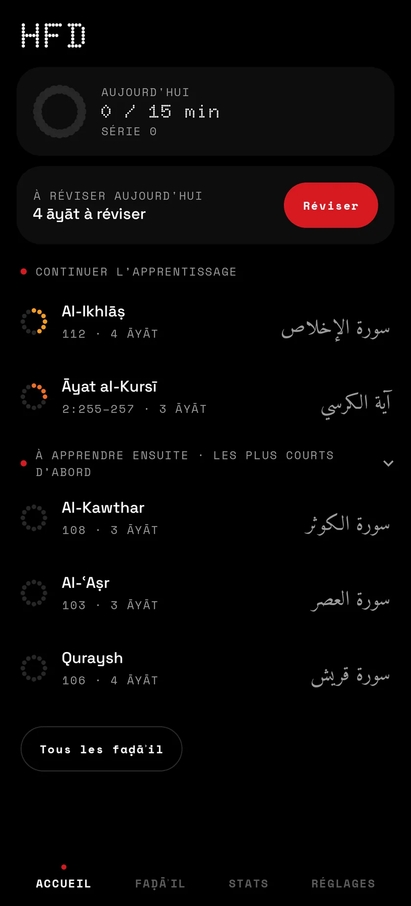
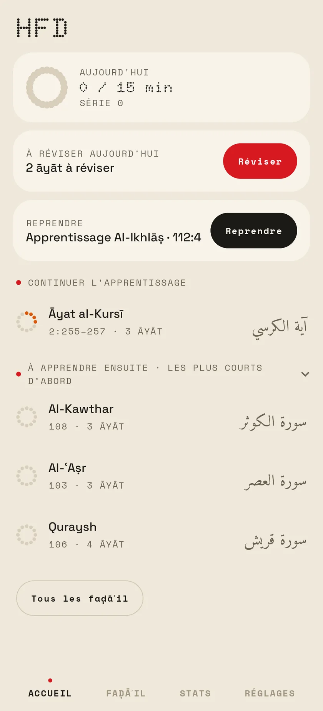
Accueil et lecture d'Āyat al-Kursī. Sombre ou papier : essayez le bouton en haut de la page.
À l'écran
Noir ou papier, un seul rouge, des points. Le texte uthmani de Tanzil en Amiri Quran, avec ses ḥarakāt et ses signes de pause, et la traduction de Hamidullah en dessous.
L'objectif du jour, les āyāt à réviser, puis la suite de ce que vous apprenez.
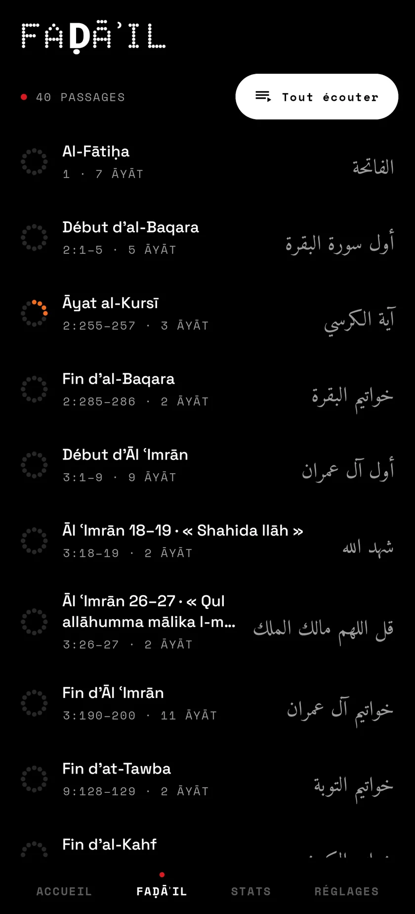
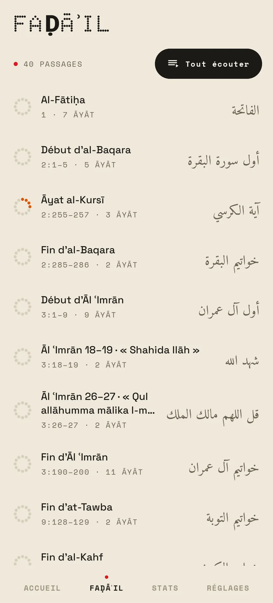
Ceux de l'app de référence, dans son ordre, chacun avec son anneau de progression. « Tout écouter » les enchaîne.
Le texte de Tanzil en grand, la traduction dessous, l'āya jouée mise en avant. Répétitions, pause et récitateur à portée de pouce.
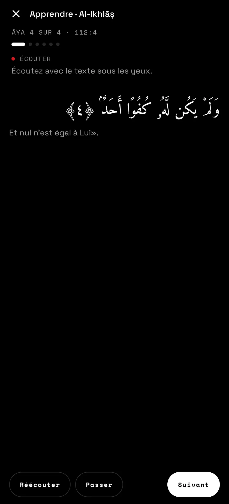
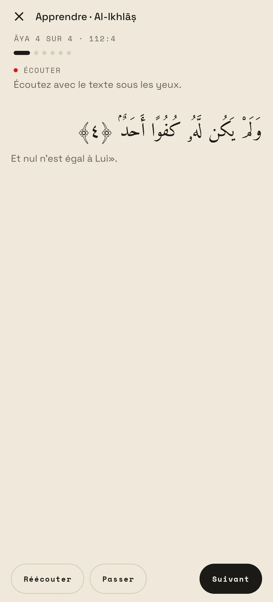
Écouter avec le texte, répéter dans les pauses, le premier mot seul, puis de mémoire.
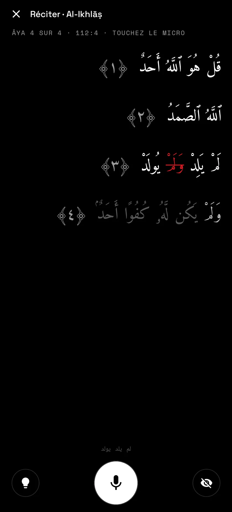
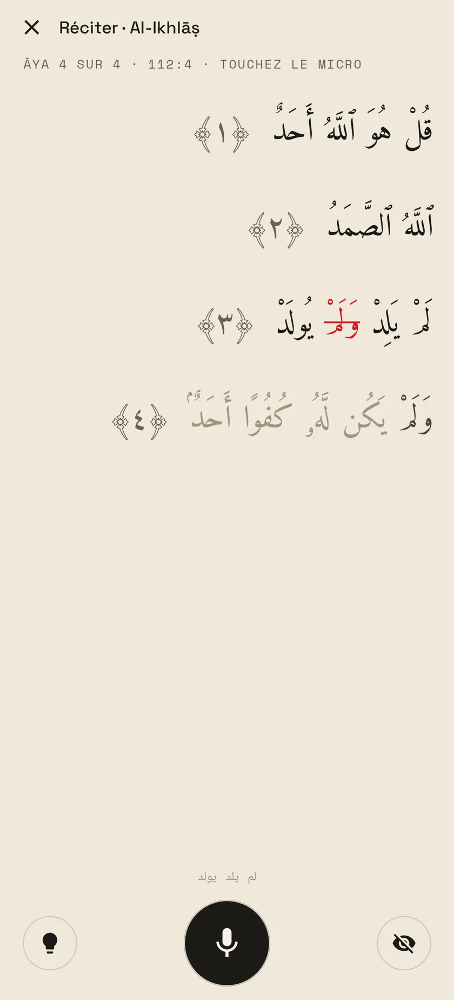
Récitez au micro : les mots s'allument un à un, le mot sauté est barré en rouge.
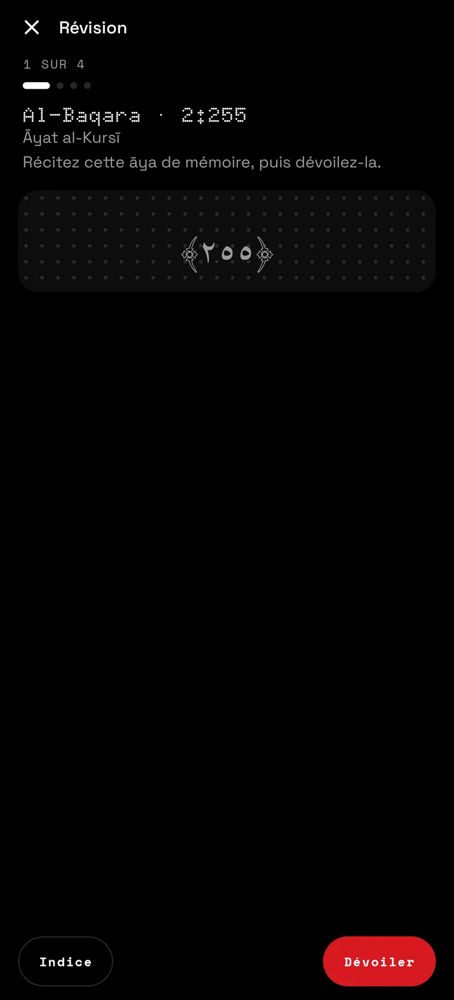
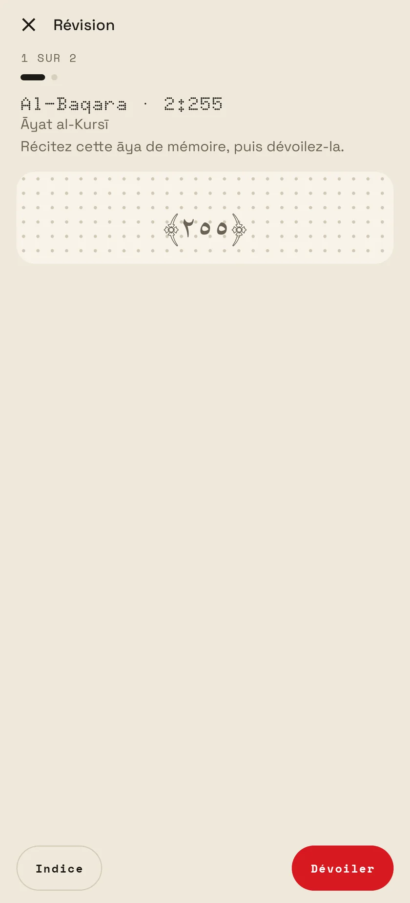
Ce qui est dû aujourd'hui, texte caché : réciter de mémoire, dévoiler, noter.
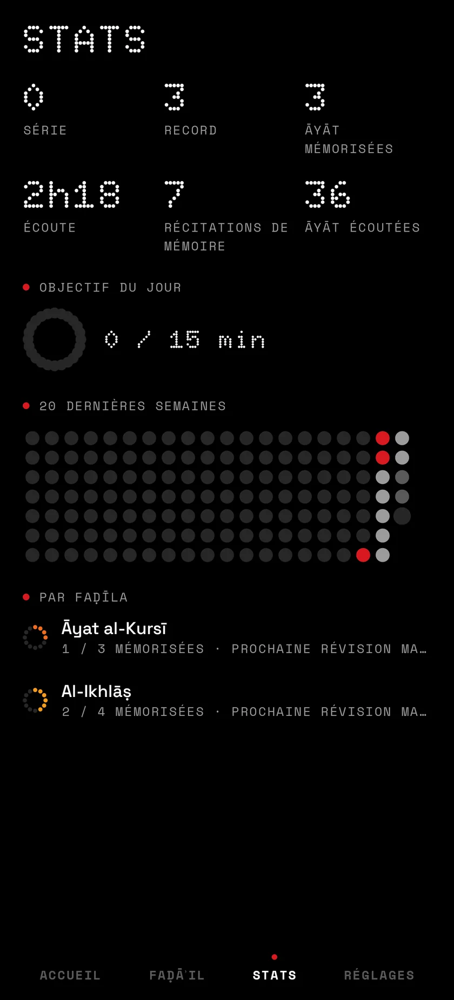
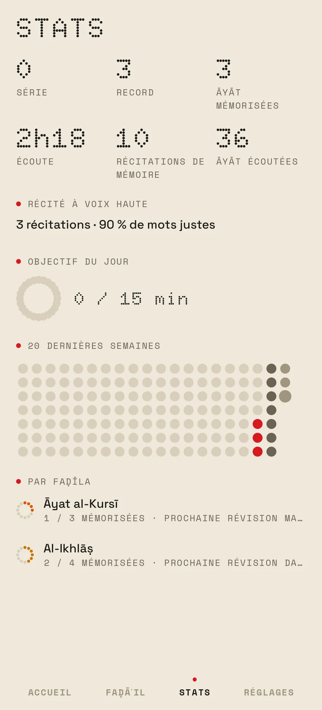
Série, āyāt mémorisées, récitations, temps d'écoute, et vingt semaines en points.
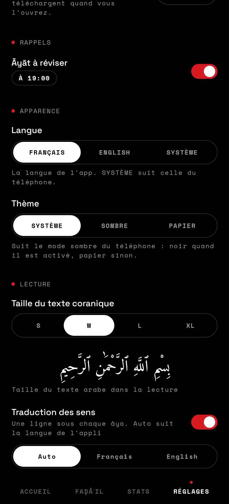
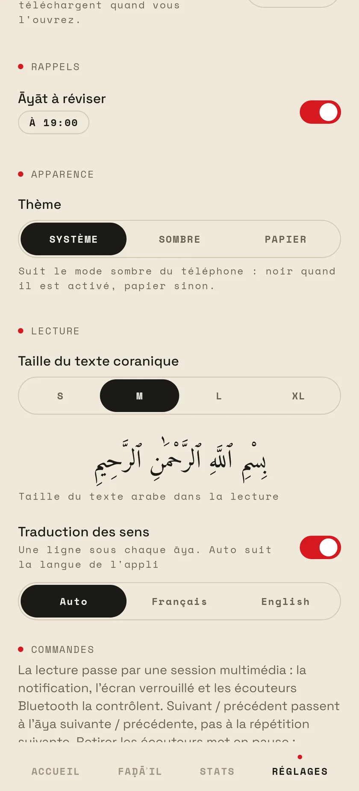
Le rappel de révision, le thème sombre ou papier, la taille du texte, la traduction.
Mémoriser
Le lecteur suit un plan : l'āya, une pause pour la redire à voix haute, l'āya encore, puis la suivante. Chaque āya a sa force de mémorisation, recalculée par FSRS à chaque révision et affichée en anneau, du rouge au vert.
Des vertus établies
HFD reprend les 40 passages de l'app سور وآيات فاضلة, dans son ordre. Leurs vertus sont rapportées dans les recueils de hadiths ; en voici trois, vérifiées sur le texte source.
آية الكرسي
Interrogé sur le plus grand verset du Livre d'Allah, Ubayy répondit par Āyat al-Kursī, et le Prophète ﷺ l'approuva : « Que la science te réjouisse, Abū l-Mundhir ! »
خواتيم البقرة
Celui qui récite les deux derniers versets de la sourate al-Baqara la nuit, ils lui suffisent.
سورة الإخلاص
« Qul huwa Allāhu aḥad » équivaut au tiers du Coran.
Ce que fait HFD
Les 40 passages de سور وآيات فاضلة, dans le même ordre : al-Fātiḥa, Āyat al-Kursī, la fin d'al-Baqara, al-Mulk, al-Kahf, les dernières sourates…
Texte uthmani de Tanzil, jamais modifié, avec ḥarakāt et signes de pause. Traduction de Hamidullah en français, Saheeh International en anglais. Taille du texte de S à XL.
Chaque āya de ×1 à ×∞, le passage aussi, une pause après chaque récitation pour la redire, la vitesse de 0,75 à 1,25×. Une plage au choix, ou tout d'un coup avec « Tout écouter ».
Māhir al-Muʿayqilī par défaut, Mishary Alafasy, al-Ḥuṣarī et son muʿallim, al-Minshāwī, ʿAbd al-Bāsiṭ, Badr at-Turkī et d'autres.
Écouter avec le texte, répéter dans les pauses, le premier mot seul, réciter de mémoire, révéler et noter. Après chaque nouvelle āya, on reprend depuis le début.
FSRS calcule pour chaque āya la date de la prochaine révision. Tout ce qui est dû passe en une séance, texte caché.
Récitez de mémoire : les mots s'allument un à un, les mots sautés sont barrés. La reconnaissance tourne sur le téléphone, avec le modèle coranique de Tarteel.
Ouvrir un passage télécharge ses āyāt, et la pastille passe du rouge au vert. Ensuite, tout marche sans réseau.
Chaque écoute et chaque note sont écrites dans un journal, d'où tout se reconstruit. Sauvegarde Android, et export en JSON.
Notification, écran verrouillé, commandes Bluetooth : suivant et précédent passent à l'āya voisine. Un rappel, si vous voulez, quand des āyāt sont à réviser.
Noir comme Nothing OS, ou papier chaud à l'encre noire, comme un muṣḥaf imprimé. Au choix dans les réglages, ou selon le mode sombre du téléphone.
À chaque ouverture, HFD regarde la dernière version, la télécharge, vérifie son empreinte SHA-256 et propose de l'installer.
Installer
Le bouton pointe toujours vers la dernière version publiée.
Android le demande une seule fois, pour les applis qui ne viennent pas du Play Store.
Les versions suivantes arrivent depuis l'app elle-même. Android 8.0 ou plus récent.
Sur un ordinateur ? Scannez avec le téléphone
https://github.com/kream0/hfd/releases/latest/download/hfd.apk